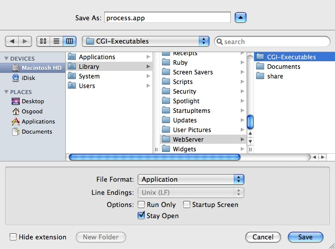

AppleScript CGI
AppleScript is often used to create CGI tools for server software. A CGI is a tool which processes submitted HTML form data and returns the results, in HTML form, back to the server.
NOTE: In the current version of Mac OS X, AppleScript CGI applications require the installation of the ACGI Dispatcher in order to receive CGI messages from the built-in Apache server which is activated when Personal Web Sharing is turned on.
The following script is a full-functioning CGI and requires no extra scripting additions in order to parse POST data from a submitted HTML form like the example below.
<HTML> <HEAD> <TITLE>Simple Form</TITLE> </HEAD> <BODY BGCOLOR="#FFFFFF"> <FONT FACE="Geneva" SIZE="2">Pick a color:</FONT> <FORM ACTION="process.app" METHOD="POST"> <SELECT NAME="CHOSEN COLOR"> <OPTION VALUE="Red" SELECTED>Red <OPTION VALUE="Blue">Blue <OPTION VALUE="Green">Green <OPTION VALUE="Yellow">Yellow </SELECT><BR> <INPUT TYPE="submit" VALUE="Submit"> </FORM> </BODY> </HTML>
When this form is submitted, the CGI application would return a webpage containing:
CHOSEN COLOR: Red
Here's the script:
Save it as an application (not an application bundle) with the Stay Open option checked. On Mac OS X, CGIs are usually placed in the Library > WebServer > CGI-Executables folder.

To create an AppleScript CGI, save the script as an application (not in bundle format) with the Stay Open option checked.